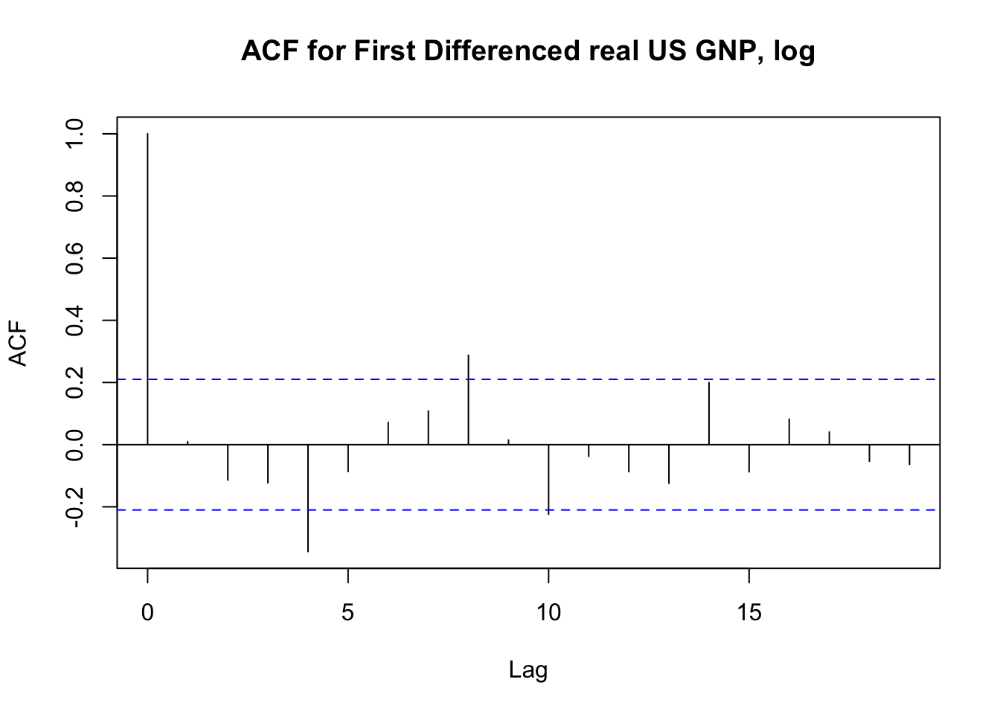
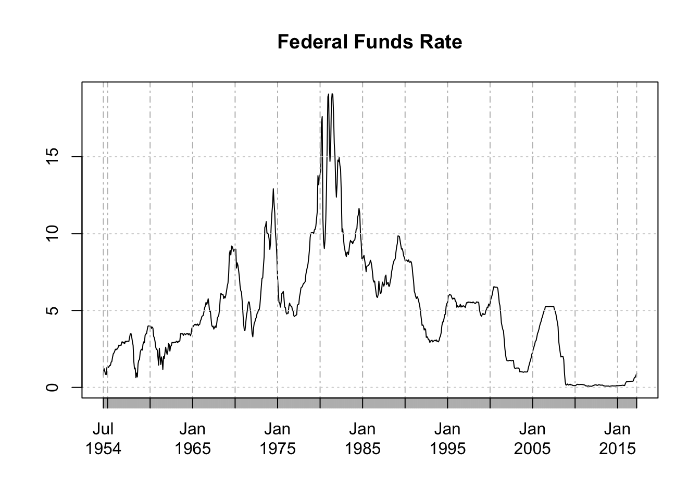

fredr seamlessly interacts with the RESTful API for Federal Reserve Economic Data (FRED), provided by the Federal Reserve Bank of St. Louis. Essentially a simple wrapper of httr, dplyr, and the FRED API itself, fredr is designed with simplicity and flexibility in mind. In addition a generic query function fredr to return any query as a data.frame, the package also provides convenience functions fredr_search and fredr_series to simplify the process to finding and importing FRED data series as R objects. As nearly all optional parameters supplied to these functions are relayed verbatim to the API, the user is strongly encouraged to read the full FRED API to leverage the full power of the FRED API and fredr. The convenience function fredr_docs quickly brings up the web documentation. See the section below for usage examples.
Usage
Load fredr and set FRED API key in working directory. You must first obtain a FRED API key. It is also recommended to reveiw the FRED API Terms of Use.
library(fredr)
fredr_key("abcdefghijklmnopqrstuvwxyz123456")Search for FRED series
fredr_search(search_text = "unemployment")
#> # A tibble: 1,000 x 15
#> id realtime_start realtime_end
#> <chr> <chr> <chr>
#> 1 UNRATE 2017-06-03 2017-06-03
#> 2 UNRATENSA 2017-06-03 2017-06-03
#> 3 NROU 2017-06-03 2017-06-03
#> 4 M0892AUSM156SNBR 2017-06-03 2017-06-03
#> 5 Q0892BUSQ156SNBR 2017-06-03 2017-06-03
#> 6 M0892BUSM156SNBR 2017-06-03 2017-06-03
#> 7 U6RATE 2017-06-03 2017-06-03
#> 8 M0892CUSM156NNBR 2017-06-03 2017-06-03
#> 9 UNEMPLOY 2017-06-03 2017-06-03
#> 10 U6RATENSA 2017-06-03 2017-06-03
#> # ... with 990 more rows, and 12 more variables: title <chr>,
#> # observation_start <chr>, observation_end <chr>, frequency <chr>,
#> # frequency_short <chr>, units <chr>, units_short <chr>,
#> # seasonal_adjustment <chr>, seasonal_adjustment_short <chr>,
#> # last_updated <chr>, popularity <int>, notes <chr>Get a FRED series. Returns an xts object.
library(dplyr)
library(xts)
fredr_series(series_id = "UNRATE",
observation_start = "1990-01-01") %>%
window(., start = "1990-01-01", end = "1991-01-01")
#> UNRATE
#> 1990-01-01 5.4
#> 1990-02-01 5.3
#> 1990-03-01 5.2
#> 1990-04-01 5.4
#> 1990-05-01 5.4
#> 1990-06-01 5.2
#> 1990-07-01 5.5
#> 1990-08-01 5.7
#> 1990-09-01 5.9
#> 1990-10-01 5.9
#> 1990-11-01 6.2
#> 1990-12-01 6.3
#> 1991-01-01 6.4Leverage the native features of the FRED API:
fredr_series(series_id = "UNRATE",
observation_start = "1990-01-01",
frequency = "q",
units = "chg") %>%
window(., start = "1990-01-01", end = "1991-01-01")
#> UNRATE
#> 1990-01-01 -0.1
#> 1990-04-01 0.0
#> 1990-07-01 0.4
#> 1990-10-01 0.4
#> 1991-01-01 0.5fredr_series(series_id = "GNPCA",
units = "log") %>%
diff() %>%
na.omit() %>%
StructTS() %>%
residuals() %>%
acf(., main = "ACF for First Differenced real US GNP, log")
fredr_search(search_text = "federal funds",
order_by = "popularity",
limit = 1)$id %>%
fredr_series(series_id = .) %>%
plot(., main = "Federal Funds Rate")
Quickly access the FRED API web documentation for any endpoint
fredr_docs(endpoint = "series/observations")You may also use the params option for fredr_docs to go straight to the endpoint’s Parameters section.
fredr_docs(endpoint = "category/related_tags", params = TRUE)You can also use the backbone function fredr to run more general queries against any FRED API endpoint (e.g. Categories, Series, Sources, Releases, Tags). This is also useful to return any arbitrary information as a tbl_df object.
fredr(endpoint = "tags/series", tag_names = "population;south africa")
#> # A tibble: 59 x 15
#> id realtime_start realtime_end
#> <chr> <chr> <chr>
#> 1 LFWA24TTZAA647N 2017-06-03 2017-06-03
#> 2 LFWA24TTZAA647S 2017-06-03 2017-06-03
#> 3 LFWA24TTZAQ647N 2017-06-03 2017-06-03
#> 4 LFWA24TTZAQ647S 2017-06-03 2017-06-03
#> 5 LFWA25TTZAA647N 2017-06-03 2017-06-03
#> 6 LFWA25TTZAA647S 2017-06-03 2017-06-03
#> 7 LFWA25TTZAQ647N 2017-06-03 2017-06-03
#> 8 LFWA25TTZAQ647S 2017-06-03 2017-06-03
#> 9 LFWA55TTZAA647N 2017-06-03 2017-06-03
#> 10 LFWA55TTZAA647S 2017-06-03 2017-06-03
#> # ... with 49 more rows, and 12 more variables: title <chr>,
#> # observation_start <chr>, observation_end <chr>, frequency <chr>,
#> # frequency_short <chr>, units <chr>, units_short <chr>,
#> # seasonal_adjustment <chr>, seasonal_adjustment_short <chr>,
#> # last_updated <chr>, popularity <int>, notes <chr>